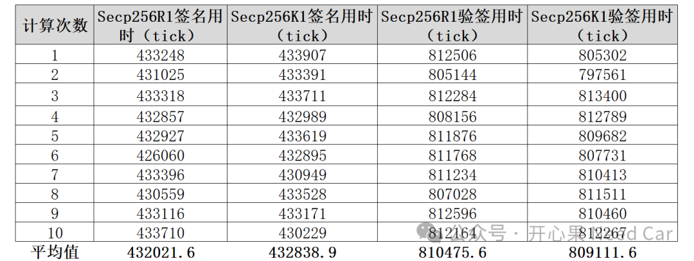
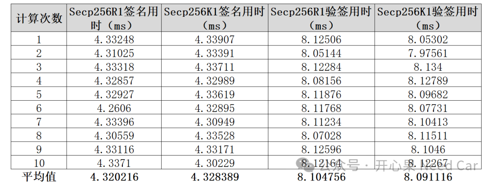
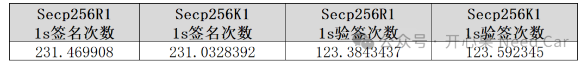
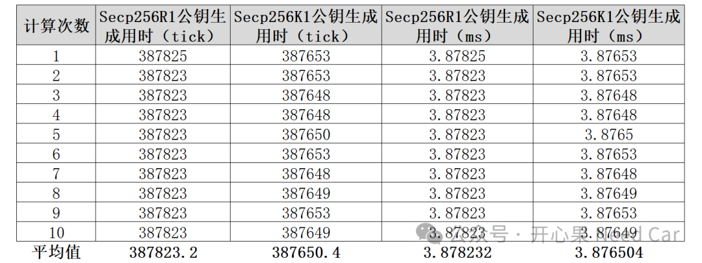
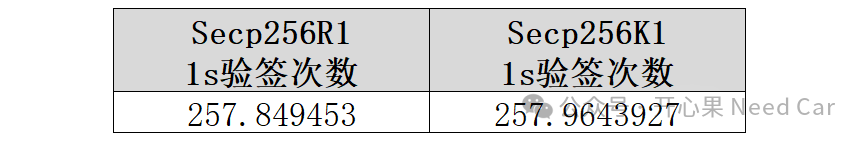

开心果 Need Car · 2025-02-14T06:36:00+08:00 · 微信原文
1、secp256r1/k1参数
secp256r1 也被称为 P-256 或 prime256v1，是一条定义在 256 bit 素数域上的 Weierstrass （维尔斯特拉斯）曲线。secp256r1 的主要参数包括（1）：
有限域GF(p)：曲线定义在一个非常大的素数（p）域上，其值为 0xffffffff00000001000000000000000000000000ffffffffffffffffffffffff。
曲线方程：y^2 = x^3 + ax + b，，对于 secp256r1，
a =
0xffffffff00000001000000000000000000000000fffffffffffffffffffffffc
b=
阶（n）：基点 G 的阶，即存在一个最小的正整数 n，使得 nG = O（O 是无穷远点），其值为 0xffffffff00000000ffffffffffffffffbce6faada7179e84f3b9cac2fc632551。
secp256k1参数可以参考（2），本文不展开。
2、基于ECDSA的签名/验签流程
验签需要的参数：消息 m、签名 (r,s) 和公钥 Q，验证签名的步骤如下：
1、计算消息m的哈希值
使用与签名相同的哈希函数(eg：SHA256)计算消息 m 的哈希值 h=H(m)。
2、检查签名参数
验证 r 和 s 是否在范围 1≤r,s<n 内。如果不在此范围内，则签名无效。
3、计算辅助值 u1 和 u2：
计算 u1=s^−1 h mod n 和 u2=s^−1 r mod n，其中 s^−1 是 s 在模 n 下的乘法逆元。
4、计算点 V：
使用椭圆曲线的点加法和点乘法运算，计算 V=u1G+u2Q。
5、验证签名：
取点 V 的 x 坐标 xV，计算 xV mod n。如果 xV mod n = r，则签名有效；否则，签名无效。

基于secp256r1/k1曲线的签名和验签性能统计如下（ms）：

进行换算，1s内可以签名和验签的次数如下：

（二）公钥生成性能
基于secp256r1/k1曲线的公钥生成性能统计如下：


（2）https://neuromancer.sk/std/secg/secp256k1
往期精彩回顾